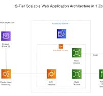

The diagram below shows the architecture that I used to implement the travel project.

Below are the steps of a GET request that retrieves both the landing page and the pictures.
I built the travel project out of a desire to learn more about non-relational databases and collect memories and pictures from my recent trips to Belgrade in a fun and personable way. It turned into a full stack project where I learned a good deal about dynamoDB and EC2, Nginx and Gunicorn. I also brielfy touched upon the concepts of proxy server and cors.
To consider in future releases:
I hope you enjoyed the travel project as much as I did when building and piecing together each component. I always welcome constructive feedback and if there is anything that stood out (or if you would simply like to say hi!) please send me a line at luisa.pegoraro@gmail.com. Živeli!